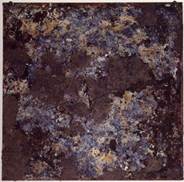
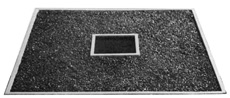
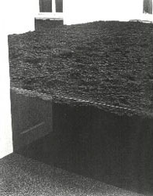
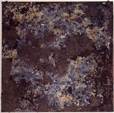
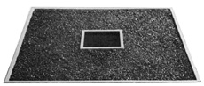
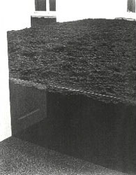

dirt  Robert Rauschenberg: Dirt Painting (For John Cage), 1952/1953  Robert Smithson: Tar Pool and Gravel Pit, 1966  Walter de Maria: 50 m3 of Dirt, 1968
 Robert Rauschenberg: Dirt Painting (For John Cage), 1952/1953
 Robert Smithson: Tar Pool and Gravel Pit, 1966
 Walter de Maria: 50 m3 of Dirt, 1968